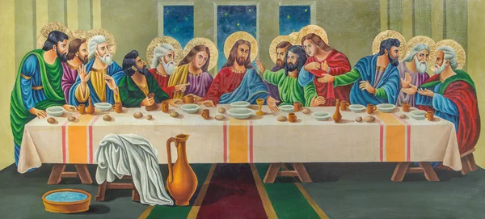

Entrada triunfal de Jesus em Jerusalém
A liturgia do Domingo de Ramos tem o rosto da alegria e do sofrimento, da fé e da incredulidade, da glória e da cruz. De fato, recordamos primeiro a entrada triunfal de Jesus em Jerusalém, e depois o drama que ele viveu até ser morto numa cruz. É acolhido e aclamado pelo povo como o Messias: Bendito o que vem em nome do Senhor! Nesta manifestação popular espontânea, podemos ver a expressão alegre da nossa fé. Nossa fé é sempre luz, vida, força, alegria. Os meninos e o povo que vibram com a chegada de Jesus parecem encarnar a verdadeira fé da humanidade que espera o Messias. Vão ao encontro de Jesus, lhe fazem festa e o aclamam como um vencedor que recebe a palma da vitória. Jesus aceita esta acolhida e esta fé: ele é realmente o Salvador, o Filho de Deus vindo ao mundo para trazer a todos o amor e a misericórdia do Pai. Jesus aceita a acolhida, mas sabe que a sua glória não virá de maneira humana, e sim na cruz: sua grandeza é o seu amor infinito, que o leva a dar a vida por todos. Enquanto o povo o aclama, os inimigos se preparam para prendê-lo e para condená-lo à morte.
Ao mesmo tempo iniciamos hoje a Semana Santa, na qual Jesus realiza a salvação do mundo com seu amor e com seu sacrifício da cruz. A liturgia nos oferece a experiência do amor infinito de Deus que se deu todo por nós na sua paixão e morte. Eis por que lemos o relato comovente, detalhado e profundo, da Paixão de Cristo. Aí se encerra todo o mistério do amor de Deus, do pecado do homem, da salvação que Jesus nos mereceu. O texto da paixão de Jesus fala por si e dispensa comentário. É o relato dos fatos através dos quais chegou a nós a redenção. Todo o mal que se faz sobre a terra de certa forma é condensado naquelas cenas, naqueles gestos de violência: a mentira, a inveja, a traição dos amigos, a sede de poder, a adulação dos poderosos, a maldade, o ódio, o desprezo da dignidade humana, as insinuações, e tudo o mais que os homens fazem de mal, tudo parece estar presente na paixão de Jesus.
Colocar juntos, como faz a celebração de hoje, as duas atitudes da multidão, que antes aclama Jesus e depois o condena, nos leva a entender como é fácil esquecer o amor de Deus, deixar-se vencer pelo pecado, renegar o Senhor. Também cada um de nós, tantas vezes, cai na tentação, no medo, no egoísmo, no pecado, como Pedro e Judas. Trata-se de crer em Deus, no seu amor infinito, na sua misericórdia sem limites. O amor de Deus, expresso na cruz, é a nossa plena, contínua, eterna salvação. Mesmo que nos acontecesse o pecado mais grave, Deus é maior que todo nosso pecado, e veio justamente para tirar os nossos pecados, para dar-nos a alegria e os frutos do seu amor.
De acordo com a cronologia joanina, a Última Ceia aconteceu na tarde da quinta-feira, e não se trata de uma ceia pascal, como expressam os sinóticos. Ratzinger salienta que exegetas têm se debruçado sobre essa questão para conciliar as duas cronologias e demonstraram-se, com base nas fontes, mais favoráveis a João. O sentido teológico da Última Ceia de Jesus é enfatizado nestes termos:
“Um dado é evidente em toda a tradição: o essencial dessa Ceia de despedida não foi a Páscoa antiga, mas a novidade que Jesus realizou neste contexto. Mesmo que este banquete de Jesus com os doze não tenha sido uma ceia pascal, segundo as prescrições rituais do judaísmo, num olhar retrospectivo tornou-se, com a morte e a ressurreição de Jesus, evidente o significado intrínseco do todo: era a páscoa de Jesus. E, nesse sentido ele celebrou a páscoa e não celebrou. […] Mas Ele entregara-Se a Si mesmo, e assim tinha celebrado com eles verdadeiramente a Páscoa. Dessa forma o antigo não tinha sido negado, mas – e só assim o poderia ser – levado ao seu sentido pleno”
Relativamente à interpretação dos conteúdos teológicos essenciais da tradição da Última Ceia, a partir das palavras diferentes de Marcos/Mateus e Paulo/Lucas, destacam-se duas direções próprias dessa oração, que é louvor e agradecimento pelo dom de Deus, sendo que esse louvor retorna em forma de benção sobre o dom. O partir o pão representa Deus Pai, que pela fecundidade da terra distribui o pão para todos, bem como o gesto da hospitalidade que acolhe a todos na comunhão do banquete. A frase pronunciada sobre o pão: “Isto é o meu Corpo” – Marcos/Mateus, “que é dado por vós” – Paulo/Lucas, institui o Sacramento “onde se torna o grão de trigo que morre; e onde, por meio dos tempos, Se distribui a Si mesmo aos homens na verdadeira multiplicação dos pães.”
A frase pronunciada sobre o vinho: “Isto é o meu Sangue, o Sangue da Aliança” resume toda a história da salvação anterior, descritas no Ex.24,8; Jr, 31,31 e em Is 53,12, com a promessa do Servo que carrega os pecados de muitos, obtendo para eles a salvação. A repetição encontrada em Paulo/Lucas: “Fazei isto em memória de Mim”, trazem o caráter da instituição da prática litúrgica. Observa-se, portanto, que a Igreja não celebra na Missa a Última Ceia, e sim o que durante a Última Ceia o Senhor instituiu: o memorial de sua morte e ressurreição.
Concluído esse momento com a recitação dos salmos, Jesus se dirige com seus discípulos para o Monte das Oliveiras, a um lugar chamado Getsêmani. Ratzinger menciona o evangelista João que, ao se referir a esse lugar em que Jesus sofreu, morreu e ressuscitou, denomina-o como “jardim” (cf. Jo 18; 19,41), aludindo à narração do Paraíso e do pecado original, para afirmar que Jesus retomou a história no jardim, aceitou a vontade do Pai e inverteu a história.
A oração que Jesus proferiu na sua profunda agonia: “Abba! Ó Pai! Tudo é possível para Ti: Afasta de mim este cálice; porém não o que Eu quero, mas, o que Tu queres” (Mc 14,36), possui um denso sentido teológico, visto que, na natureza humana de Jesus está a obstinação do homem e, com a sua luta, essa natureza recalcitrante é movida para a sua verdadeira essência. A oração “não se faça a Minha vontade mas a Tua” (Lc 22,42) é acentuada por Ratzinger com estas palavras:
“É verdadeiramente uma oração do Filho ao Pai, na qual a vontade humana natural foi totalmente arrastada para dentro do Eu do Filho cuja essência se exprime precisamente no ‘não Eu, mas Tu’, no abandono total do Eu ao Tu de Deus Pai. Mas este ‘Eu’ acolheu em si a oposição da humanidade e transformou-a, de tal modo que agora, na obediência do Filho, estamos presentes todos nós, somos todos arrastados para dentro da condição de filhos” (RATZINGER, 2016, p.150).
Essa significante oração termina quando Judas chega acompanhando com guardas enviados pelas autoridades do Templo e O prendem e, assim, inicia-se o Seu processo de condenação à morte. Ele, ao deparar-se com o sumo sacerdote, instância suprema do povo eleito, o sumo sacerdote dos bens futuros (cf. Hb 9,11), e ser interrogado se era o Filho de Deus, responde afirmativamente. Então, é entregue ao governador romano para a condenação.
Mediante à pergunta de Pilatos: “Então Tu és Rei?”, em que Jesus responde: “Tu o dizes: Sou Rei. Para isto nasci e vim ao mundo: para dar testemunho da verdade. Quem é da verdade ouve a Minha voz” (Jo 18,37), com isso Jesus introduz um conceito, tornando acessível o fundamento do poder de Sua realeza: a Verdade!
Entretanto, na pergunta de Pilatos, se vê em jogo o destino da humanidade: “Que é a verdade?” (Jo 18,38). Dessa forma, compreende-se que testemunhar a Verdade significa pôr em evidência Deus e Sua vontade diante dos interesses do mundo e de suas potências. Observa-se que, a redenção fundamenta-se no fato de que, a Verdade tornou-se reconhecível em Jesus Cristo que entrou no mundo e a instaurou no meio da história.
“Considera-se como elemento essencial destes últimos acontecimentos a morte de Jesus na cruz que, segundo os evangelistas, deu-se às três horas da tarde. Jesus foi verdadeiramente até o fim, realizou a totalidade do amor, deu-Se a Si mesmo. ‘Em lugar de todos os outros atos cultuais, entra a cruz de Jesus como a única verdadeira glorificação de Deus, na qual se glorifica a Si mesmo por meio d’Aquele em quem Ele nos dá o seu amor e, assim, nos atrai rumo às alturas para Si’” (RATZINGER, 2016, p. 202).